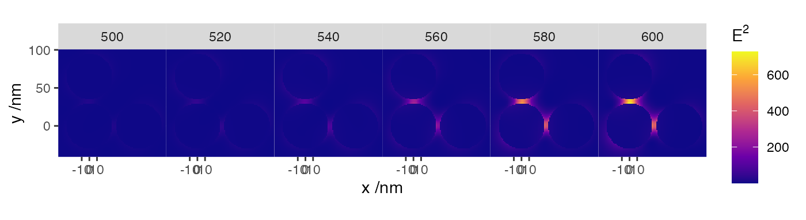
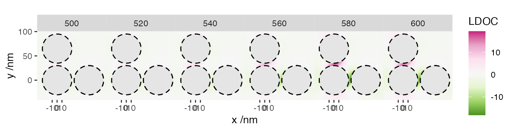

vignettes/09_spectrum_near_field/09_spectrum_near_field.Rmd
09_spectrum_near_field.RmdThis example illustrates the calculation of near-field calculations for multiple wavelengths. The structure consists of two gold spheres in water. The wavelength is varied from 400 to 800 nm, and we map the normalised local degree of chirality around the structure.
This simulation uses the following input file
ModeAndScheme 1 3
Wavelength 400 800 20
MultipoleCutoff 8
Medium 1.7689
Incidence 0 0 0 1
OutputFormat HDF5 map
SpacePoints -15 15 200 -15 45 200 0 0 0
MapQuantity 2 E C
Scatterers 2
Au 0 0 0 10
Au 0 30 0 10 group name otype dclass dim
0 / Near-Field H5I_GROUP
1 /Near-Field Gridpoints H5I_DATASET FLOAT 40401 x 3
2 /Near-Field Incidences H5I_DATASET FLOAT 1 x 4
3 /Near-Field Wavelengths H5I_DATASET FLOAT 21
4 /Near-Field map_E H5I_DATASET FLOAT 848421 x 7
5 /Near-Field normalised_ldoc H5I_DATASET FLOAT 848421 x 5

Last run: 22 November, 2021